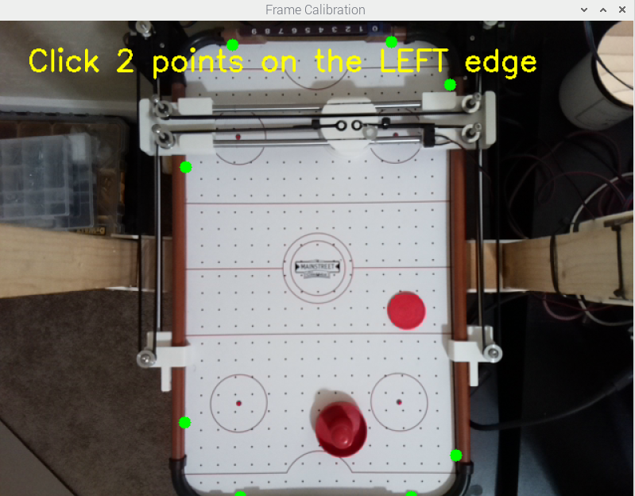
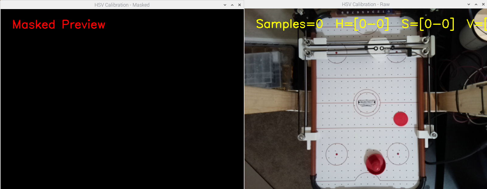

|
Air Hockey Robot
|

|
|
Air Hockey Robot
|
|
As part of the ME507 class project, an air hockey robot was created. A human player is situated on one side of the board, and a 2-axis, CoreXY style robot is on the other side. The robot will automatically predict where the puck will go and move the handle to that location. The robot is not quite fast enough to play the game as intended, so the operator will wait until the robot is in location. The robot is also not quite fast enough to hit it back, so if the puck becomes stuck, the robot will automatically push the puck to the operators side.
The robot is separated into two separate functions: movement and sensing.
The movement portion is a typical CoreXY style robot where two steppers use differential control to move the handle to each location. The steppers are both stationary and use one belt for movement. The movement portion automatically zeros itself upon each restart. This involves using two limit switches to zero the X and Y axis. The movement is all controled by an STM32 with TMC2209 stepper drivers.
The robot itself is controlled through a custom PCB with a couple of important features. The main processor is an STM32F411CEU6 using C/C++. There are header pins on the board to program the chip with an ST-LINK from a Nucelo board. The board also features two TMC2209 stepper driver chips. These chips were selected for their quiet operation. These chips are only using the DIR/STEP pins to define motion, but have the functionality for full control with UART. There are two limit switch inputs in the board as well to zero. The board can take in 8V-18V as it has a built in buck to give a constant 5V and 3.3V rail. The power input comes from 1x XT-30 input to give the functionality for either a power supply or LiPo battery.
The STM32 firmware is written in C using the STM32CubeIDE and follows a structured, modular style. It is splot across three main components:
The main.c file initializes all hardware (GPIOs, UARTs, timer, etc.) and executes the core application loop. It supports two operational modes:
The firmware employs a responsive, interrupt-driven UART scheme using HAL callbacks and circular buffers, enabling non-blocking serial communication with both a PC and the Pi simultaneously.
The stepper_manager.c file implements coordinated motion planning and CoreXY kinematics. It manages:
All logic is handled in a simple finite-state machine (FSM) pattern (IDLE, MOVING, CALIBRATING) and is updated through a central StepperManager_Update() call in the main loop.
This file provides the real-time control of individual stepper motors. Features include:
This driver is intentionally kept hardware-focused and timing-tight, isolating motion primitives from higher-level path logic.
The sensing portion executed using a Raspberry Pi 4 with a camera attached. The Raspberry Pi uses OpenCv for image detection. The process for getting the final detection takes place through multiple steps in the airhockey file:
'calibrate_frame' allows the user to select two points per edge (top, bottom, left, right), which form a quadrilateral bounding box.
This selection defines a transformation matrix that isolates the board area from the rest of the image for further processing.

'calibrate_hsv' mode, the user clicks on multiple image points corresponding to the desired object colors.
As points are added, the HSV range is dynamically expanded to include all selected values, and a buffer of ±10 is applied to each HSV channel.
